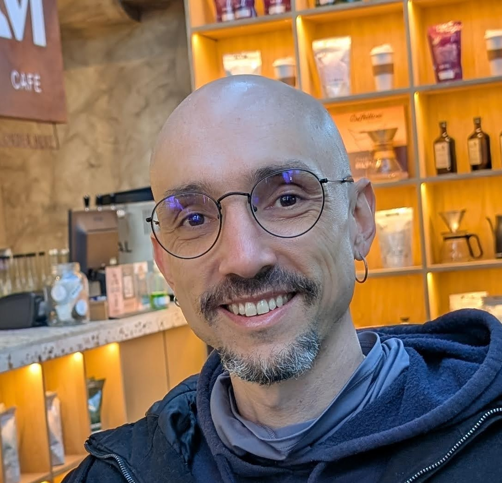

Sutil
Uma introdução leve para descobrir seu perfil antes de escolher sua curadoria.
R$ 0
- 20 min, sem custo
- Uma degustação inicial da sua rotina
- 1–2 recomendações práticas para aplicar em seguida

Precisa saber onde a IA cabe, qual opção faz sentido no seu contexto e como testar sem criar mais complexidade.
Sou o Cali, seu sommelier de IA. Acompanho de perto quase tudo que aparece de novo em IA e aprendi a reconhecer os padrões: que família de ferramenta resolve que tipo de problema, o que vale a pena experimentar no seu contexto e o que é só barulho de feed.
Com frequência alguém me conta um problema do trabalho e, naturalmente, acabo apontando um caminho ou ferramenta onde IA ou automação se encaixam. A reação mais comum é surpresa: "não sabia que dava pra fazer isso". Depois de perceber essa reação algumas vezes, transformei num serviço.
Toda semana chega uma ferramenta de IA nova no seu feed. Alguém no grupo do seu setor jura que "mudou tudo". Você testa por dez minutos, esquece, volta pro jeito antigo.
O que continua manual depende de onde você atua — quatro situações que aparecem com frequência:
Não é falta de vontade de usar IA. É que ninguém te disse qual ferramenta resolve qual dor — e em que ordem testar pra começo de conversa.
O ponto de partida muda o tipo de conversa — não o método. Três situações comuns:
O problema não é falta de ferramenta. É a falta de alguém que entende sua rotina de trabalho antes de indicar qualquer coisa.
Antes de indicar qualquer ferramenta, passei anos sentado com times de produto pra entender o problema antes da solução — e registrei esse método em dois e-books gratuitos sobre validação de ideias e Jobs to be Done.
Essa vivência em produto se estende a cultura, processos e estratégia: já atuei com consultoria, mentoria e estratégia nessas frentes. É por isso que a curadoria não para em ferramentas — quando a chave está em como as pessoas se organizam e decidem, eu indico caminhos, não só mais software.
Desde o fim de 2022 acompanho e testo de verdade soluções de IA, apoiando times e líderes. E, na indicação, sempre que possível parto do que você já paga ou que se integra a isso: algo rápido pra começar, e às vezes algo pra instalar no seu servidor, sem assinatura a mais. Quem quiser o quadro completo, está no fim da página.
Esse mesmo jeito de trabalhar já apoia pessoas sozinhas, profissionais independentes e times. O que muda entre um caso e outro é só a profundidade do diagnóstico e o plano combinado com você.
O passo a passo abaixo descreve a Curadoria Sommelier (Estruturado), que é o serviço mais procurado. O Sutil cobre só a etapa 1 com indicações diretas ao final. O Complexo estende as etapas conforme a profundidade combinada — de 2 a 3 entrevistas e plano de adoção.
Sem powerpoint, sem demonstração de ferramenta. Uma conversa guiada com perguntas como "me conta como foi seu dia de trabalho ontem, do primeiro clique ao último" e "qual a atividade mais difícil, demorada ou entediante no seu dia a dia ou da equipe?".
Cruzo o que você descreveu com o que reconheço como padrão: que família de ferramenta se encaixa naquele tipo de tarefa. Cada recomendação responde a um problema que você citou, priorizando o que você já tem ou o que é mais simples de começar.
Seu perfil de sabor, matriz de esforço × impacto, roteiro de 4 dias para provar, e estimativa de horas por semana que isso libera.
Uma segunda conversa curta pra passar a ficha de degustação com você, tirar dúvida e ajustar o que não fez sentido.
Além das recomendações de IA, sua curadoria traz um bônus que vem da minha experiência com cultura organizacional e processos: sugestões de experimentos seguros para falhar. Pequenos movimentos — de subtração e de desdobramento — que mostram onde o ganho real mora: em como o time se organiza, não em mais um software.
É o que separa uma ficha de degustação que entrega só uma lista de ferramentas de uma que soma quem já sentou com times tratando de cultura e processo. Os exemplos práticos e as perguntas-guia ficam na ficha — pra conversa não estragar a surpresa antes da hora.
Cada card mostra o que entra, qual o investimento e quando faz sentido seguir. Comece pelo que cabe no seu momento — se fizer sentido aprofundar, a próxima camada já está descrita.
Uma introdução leve para descobrir seu perfil antes de escolher sua curadoria.
Uma curadoria encorpada para quem quer começar a aplicar IA com segurança e método.
✦ Garantia: se a ficha de degustação não trouxer oportunidades reais de recuperar tempo, devolvo 100% do valor.
Uma curadoria de múltiplas camadas para times que precisam de uma adega compartilhada.
✦ Piloto sob convite, com a mesma garantia de devolução integral.
O método por trás do diagnóstico também aparece em: dois e-books gratuitos, stelow (25+ skills open source) e trabalho documentado no LinkedIn.
Antes de virar "a pessoa que indica ferramenta de IA", passei anos em times de produto digital entendendo como decidir o que vale a pena construir — sentando com pessoas pra entender o problema antes de propor solução. Escrevi um e-book sobre como validar ideias em ciclos curtos, começando por entender o que o público realmente precisa antes de sair construindo: Roteiro prático para validar ideias. E outro sobre Jobs to be Done, o método que uso pra entender por que alguém escolhe uma ferramenta ou processo pra resolver um problema específico — a mesma lógica que aplico quando prescrevo ferramenta de IA.
Essa vivência em produto se estende a cultura organizacional e processos. Já dei consultoria e mentoria nessas frentes, além de atuar com estratégia de produto.
É por isso que a curadoria não para em ferramentas. Quando a chave está em como as pessoas se organizam e decidem, eu posso oferecer caminhos possíveis, e não apenas indicar mais ferramentas.
Desde o fim de 2022 acompanho e testo soluções de IA. Já apoiei times e líderes de organizações com inteligência artificial e automação de ferramentas.
Atualmente mantenho alguns projetos públicos, relacionados ao mundo de desenvolvimento com inteligência artificial, como o stelow, um conjunto de mais de 25 skills de workflow com agentes de IA. E outras coisas mais técnicas.
Acompanho de perto o que sai de novo, testo o que faz sentido testar no meu próprio uso. E, principalmente, aprendi a reconhecer padrões entre famílias de ferramentas, o que evita ter que testar tudo pra saber o que indicar. Também catalogo publicamente aqui, há anos, alguns dos prompts que uso no dia a dia e em consultorias.
Isso é o que separa uma recomendação contextual de uma lista genérica de blog.
Sempre que possível, indicaria o que você já pode usar dentre as ferramentas já pagas, ou que se integra a elas. Algo rápido e fácil pra começar. E, às vezes, para algo mais complexo ou específico, algo que você possa instalar no seu próprio servidor, sem custo extra de assinatura, quando você já tem alguém técnico que cuida disso.
Não tem problema. A maioria das pessoas — dona de negócio, consultor ou líder de time — nunca parou pra mapear o que dá pra automatizar. A gente começa pela sua rotina: você me conta como é seu trabalho, e eu mapeio onde dá pra ganhar tempo.
Se você já viu ferramentas mas não sabe qual aplicar no seu contexto, a mesma conversa serve — a diferença é que a gente parte do que você conhece e ajusta pra sua realidade.